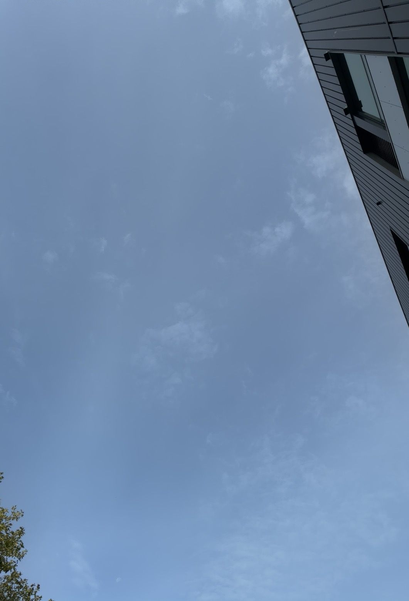

I got this color scheme from taking a picture of the sky with adobe capture.
Today we went outside and took pictures to get a color template. Then, I incorperated it into this website.
Blue is my favorite color and the sky was very nice today, so it was tempting to take a picture of it and make it into a website using adobe capture.
